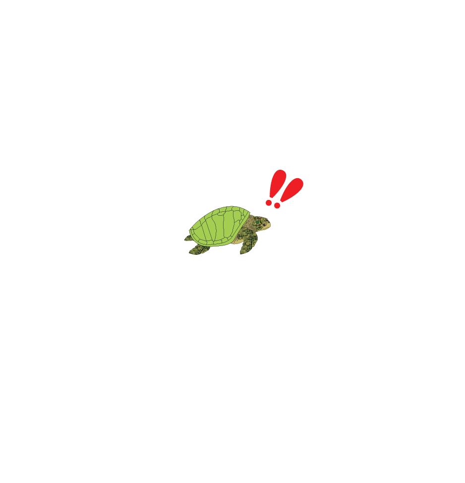

After roughly 45-70 days of incubation...

You make your way to the ocean using the brightest point of the horizon
“You happen to be lucky and see a nearby sea turtle getting caught in a fishing net and end up drowning. BUT you learned from that sea turtle’s mistake and steered clear of the net.”


“Lost years”: You have successfully made it to the ocean. At this stage you aimlessly migrate and feed on planktonic invertebrates on surface water for the first few years of your life.

After a few years have passed, you migrate to nearshore to continue to mature.
“As you were heading to the foraging area, you encountered some poachers. You tried your best to get away from them and you SUCCEEDED!”

After you became an adult, you thought that it was time to make your mark on this world and head to the adult foraging area.
“You and another turtle found each other and successfully mated. But others were not so lucky.”

You make it to the foraging area and start to breed with other turtles.
You successfully laid your eggs alongside the other sea turtles. Your eggs are healthy. Congratulations for making it this far! You go back into the ocean and migrate aimlessly until mating season again for the rest of your life and hope you are lucky enough to stay alive and die of old age!

You make your way back to the place that you hatched in and start to dig a hole and lay your eggs.